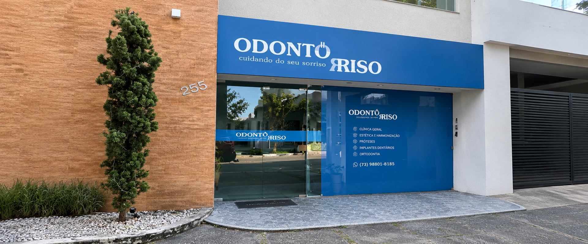
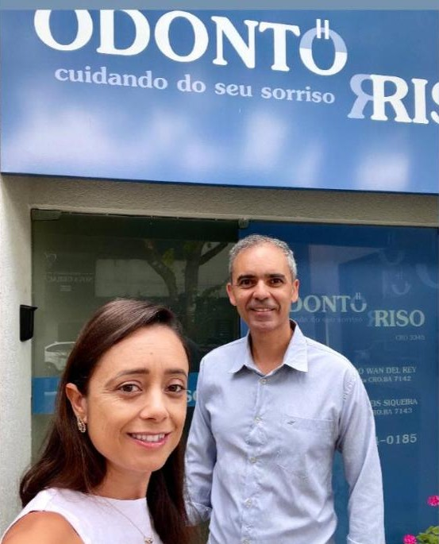
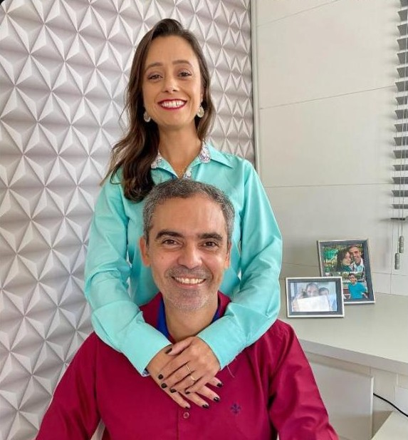
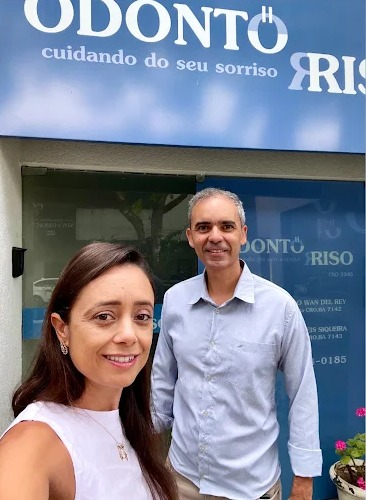

Implantes dentários
Reponha dentes ausentes com função, conforto e aparência natural, recuperando a segurança para mastigar e sorrir.
Saber sobre implantes
Há 21 anos a Odontoriso cuida da saúde bucal das famílias de Eunápolis, com implantes, ortodontia, clareamento, odontopediatria e muito mais, em um atendimento acolhedor do início ao fim.

Na Odontoriso, todo atendimento começa com escuta. Avaliamos sua saúde bucal, explicamos cada opção com clareza e montamos um plano sob medida, da prevenção à reabilitação completa.
Reponha dentes ausentes com função, conforto e aparência natural, recuperando a segurança para mastigar e sorrir.
Saber sobre implantes
Um sorriso mais claro e luminoso, com acompanhamento profissional e cuidado com o seu esmalte.
Clarear meu sorriso
Alinhe os dentes e corrija a mordida com o tratamento ortodôntico mais adequado ao seu caso.
Alinhar meus dentesAlívio da dor e preservação do seu dente natural, com cuidado em cada etapa.
Saiba maisTotal, parcial ou sobre implante: mastigação, estética e confiança de volta.
Saiba maisCorreção de cor, forma e pequenas imperfeições, com resina de aspecto natural.
Saiba maisCheck-ups e limpezas periódicas para evitar problemas maiores no futuro.
Saiba maisProcedimentos realizados com planejamento, segurança e acompanhamento.
Saiba maisConte para a gente o que você precisa e indicamos o melhor caminho.
Falar no WhatsAppA prevenção desde cedo ajuda a acompanhar o crescimento, cuidar da saúde bucal e criar uma relação tranquila com o dentista. Cuidar hoje é prevenir problemas amanhã.
e outros problemas bucais antes que eles apareçam.
e ajuda a criar bons hábitos desde pequeno.
dos dentes e da mordida a cada fase.
da fala e da autoestima da criança.
Dr. Eduardo Wan Del Rey e Dra. Vanessa Reis cuidam de pacientes de todas as idades com atenção, técnica e carinho, do primeiro contato ao acompanhamento.
Agendar avaliaçãoDr. Eduardo Wan Del Rey
CRO-BA 7142
Dra. Vanessa Reis
CRO-BA 7143

Clínica registrada (CRO-BA 3345) com responsáveis técnicos identificados.
Cada tratamento é planejado a partir da sua avaliação e dos seus objetivos.
21 anos cuidando de famílias de Eunápolis, de crianças a adultos.

Um caminho simples e sem burocracia: você fala com a gente pelo WhatsApp e nós cuidamos do resto.
Chame pelo WhatsApp e escolha o melhor horário para a sua avaliação.
Conversamos sobre suas queixas e objetivos e avaliamos a saúde da sua boca com atenção.
Você entende cada etapa, tira todas as dúvidas e segue o tratamento com tranquilidade e acompanhamento.
Super recomendo uma clínica com profissionais super competentes, um atendimento ótimo e deixa os pacientes com a autoestima renovada ❤️😘😍 faça já sua visita.
Ambiente agradável, acolhedor, profissional muito atencioso. Bom atendimento desde a marcação pelo whatsapp, super indico a clínica.
Experiência com a doutora foi maravilhosa minha filha chorou um pouquinho no começo mas ela com muito amor e carinho fez que ela deixasse ela passar o fio dental e depois escolher os brinquedinhos e depois jogar um beijo para ela isso dá …
Foi minha primeira vez nesse consultório, fiz a avaliação e gostei muito da experiência. O Dr foi muito atencioso, explicou tudo com calma e me deixou bem à vontade. Mesmo sendo apenas uma avaliação inicial, já pretendo fazer os procedimentos com o consultório. Recomendo!
Atendimento da recepção muito bom. Começando o tratamento ainda. Gostei muito da Dra. Vanessa. Ela foi muito cuidadosa com as crianças e vi um carinho e capricho durante o procedimento.
eu amei super recomendo atendeu minha filha maravilhosamente. Dr e paciente atenciosa amei, a recepção o atendimento e super super. obrigada memso
Foi ótimo, simpatia e atendimento excelente!!! Farei meu acompanhamento!!!
Excelente! Lugar harmonioso, atendimento rápido. Agilidade e precisão no tratamento. Super recomendo.
As primeiras impressões foram boas o dr bastante simpático atendimento rápido.
De modo geral, recomenda-se manter avaliações periódicas, mesmo sem dor. O intervalo ideal varia de pessoa para pessoa e é definido pelo dentista na sua avaliação.
Quando indicado e acompanhado por um cirurgião-dentista, sim. Antes de clarear, é feita uma avaliação para verificar se a sua saúde bucal permite o procedimento.
O ideal é começar cedo, a partir dos primeiros dentes. A avaliação precoce ajuda a prevenir cáries e a criar uma relação tranquila com o consultório.
Implantes, clareamento, aparelhos ortodônticos, odontopediatria, tratamento de canal, próteses, restaurações e facetas, limpeza e prevenção e cirurgias odontológicas.
O agendamento é feito pelo WhatsApp (73) 98804-0185. Formas de pagamento e condições são informadas no atendimento, é só perguntar.
Preencha os campos e a conversa abre no WhatsApp, já com as suas informações.
R. Floriano Peixoto, 255 – Centro
Eunápolis – BA
CEP 45820-340
Novo endereço no Centro, próximo à Padaria Mais Delícia. Segunda a sexta, das 8h às 12h e das 14h às 18h; sábado, das 8h às 12h.
Como chegar no Google Maps